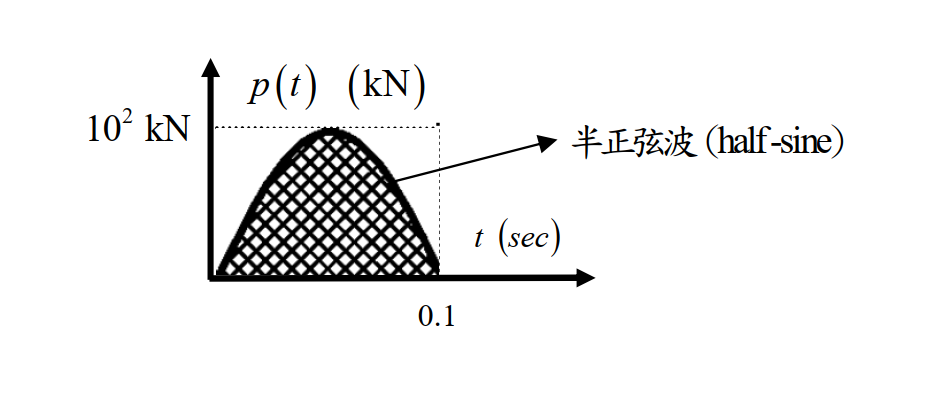

考題編號：SD-2021-2
主分類： SD-U1-3 單自由度、多自由度系統之動態分析及應用
副分類： SD-U1-1 結構動力基本性質及原理
分析方法： SDOF穩態反應（求阻尼比）＋ Duhamel積分（短時載重最大位移）
標籤： SDOF 阻尼比 穩態位移 動力放大係數 共振 頻率比 Duhamel積分 半正弦波 衝擊荷載 自由振動 兩階段法 SRS
1. 原始題目重述 (Problem Restatement)
(一) 求阻尼比
SDOF 系統，自然振動頻率 $\omega_0 = 10$ rad/sec，受簡諧載重 $p(t) = p_0\sin(\bar{\omega}t)$。
- 當 $\bar{\omega} = 0.1$ rad/sec：最大穩態位移 $X_1 = 2.4$ cm
- 當 $\bar{\omega} = 10$ rad/sec：最大穩態位移 $X_2 = 20$ cm
求阻尼比 $\xi$。
(二) 最大位移（半正弦波衝擊載重）
已知 $m = 10^4$ kg，$\xi$ 由(一)求得。 受如圖所示半正弦波載重：振幅 $p_0 = 10^2$ kN，持續時間 $t_d = 0.1$ sec。

圖說：半正弦波衝擊載重 $p(t) = p_0\sin(\pi t / t_d)$，$p_0 = 100$ kN，$t_d = 0.1$ sec；$t > 0.1$ sec 後 $p = 0$（自由振動）。
2. 考題核心精神與出題者意圖 (Core Concepts & Examiner's Intent)
核心觀念：
- (一) 利用不同頻率比下的穩態振幅比，反推阻尼比——考「動力放大係數 $D$ 的頻率特性」
- (二) 短時衝擊載重（$t_d \ll T$）的最大位移——考「Duhamel 積分兩階段法」及「判斷最大值發生於載重中或結束後」
出題者測驗能力： 1. 認識共振條件（$\bar{\omega} = \omega_0$）下的放大係數 $D = 1/(2\xi)$ 2. 辨識低頻激振的準靜態特性，直接讀出靜位移 3. 對衝擊載重使用「兩階段（強迫+自由振動）法」求最大位移
關鍵陷阱： 計算(一)時，若兩個條件都套完整公式，會有兩個方程式兩個未知數（$p_0/k$ 和 $\xi$），解法複雜。正確辨識 $\bar{\omega} = 0.1$ rad/sec 為準靜態（$r_1 = 0.01$），可直接讀出靜位移。
3. 解題戰略地圖與陷阱分析 (Strategic Roadmap & Trap Analysis)
作戰計畫（一）： 1. 計算兩個頻率比 $r_1 = 0.1/10 = 0.01$，$r_2 = 10/10 = 1$ 2. 識別 $r_1 \approx 0$（準靜態）→ $X_1 = p_0/k$（直接讀出靜位移） 3. 識別 $r_2 = 1$（共振）→ $D_2 = 1/(2\xi)$ 4. 兩式聯立求 $\xi$
作戰計畫（二）： 1. 由 $m, \omega_0$ 求 $k$，再求靜位移 $x_{st} = p_0/k$ 2. 求自然週期 $T$，計算 $t_d/T$ 判斷載重型態 3. Duhamel 積分：強迫相 $(0 \leq t \leq t_d)$ 求端點 $x(t_d)$、$\dot{x}(t_d)$ 4. 自由振動相 $(t > t_d)$ 求最大振幅 $\sqrt{x(t_d)^2 + (\dot{x}(t_d)/\omega_0)^2}$ 5. 比較兩相最大值取大者
四大陷阱：
| # | 陷阱 | 正確處理 |
|---|---|---|
| 1 | 以為 $r_1 = 0.01$ 也需套完整公式 | $r_1 \approx 0$ 時 $D \approx 1$，$X_1 \approx p_0/k$ |
| 2 | $r = 1$ 時分母 $1-r^2 = 0$，誤用一般公式 | 共振公式 $D = 1/(2\xi)$（有阻尼） |
| 3 | 半正弦波激振頻率誤設為 $p_0/t_d$ | $\Omega = \pi/t_d$（從 $\sin(\pi t/t_d)$ 讀出） |
| 4 | 最大位移誤以為只在強迫相 | $t_d/T \approx 0.16 < 0.5$：最大值通常在自由振動相 |
3.5 變數層次分析 (Variable Hierarchy Analysis)
複習提示：第一次解題後，在每個卡住的知識點旁標記
⚠；第二次複習時只看有⚠的項目。
最終目標
(一) 阻尼比 $\xi$；(二) 半正弦波衝擊載重下的最大絕對位移 $x_{max}$
本題關鍵公式（依計算順序）
$$\text{Step 1（一）: 頻率比} \quad r_1 = \frac{0.1}{10} = 0.01,\quad r_2 = \frac{10}{10} = 1$$
$$\text{Step 2（一）: 準靜態} \quad X_1 \approx \frac{p_0}{k} = 2.4 \text{ cm}$$
$$\text{Step 3（一）: 共振放大} \quad X_2 = \frac{p_0/k}{2\xi} = 20 \text{ cm} \;\Rightarrow\; \xi = \frac{\boxed{p_0/k}}{2 \times 20}$$
$$\text{Step 4（二）: 系統勁度} \quad k = m\omega_0^2 = 10^4 \times 10^2 = 10^6 \text{ N/m}$$
$$\text{Step 5（二）: 靜位移} \quad x_{st} = \frac{p_0}{k} = \frac{10^5}{10^6} = 0.1 \text{ m}$$
$$\text{Step 6（二）: 激振頻率與頻率比} \quad \Omega = \frac{\pi}{t_d} = 10\pi,\quad r = \frac{\Omega}{\omega_0} = \pi$$
$$\text{Step 7（二）: 強迫相端點值} \quad x(t_d) = \frac{\boxed{x_{st}}}{1-\boxed{r}^2}[0 - r\sin(\omega_0 t_d)]$$
$$\text{Step 8（二）: 自由相振幅} \quad X_{max} = \sqrt{x(t_d)^2 + \left(\frac{\dot{x}(t_d)}{\omega_0}\right)^2}$$
L1：題目直接給定
| 符號 | 數值 | 說明 |
|---|---|---|
| $\omega_0$ | $10$ rad/sec | 系統自然頻率 |
| $X_1$ | $2.4$ cm | $\bar{\omega} = 0.1$ 時穩態位移 |
| $X_2$ | $20$ cm | $\bar{\omega} = 10$ 時穩態位移 |
| $m$ | $10^4$ kg | 系統質量 |
| $p_0$ | $10^2$ kN $= 10^5$ N | 半正弦波振幅 |
| $t_d$ | $0.1$ sec | 載重持續時間 |
L2：需知識點推導
（一）阻尼比
| 符號 | 公式／來源 | 卡關? |
|---|---|---|
| $r_1, r_2$ | $\bar{\omega}/\omega_0$：$0.01$、$1.0$ | |
| $p_0/k$ | $X_1 \approx 2.4$ cm（$r_1 \approx 0$，準靜態） | |
| $\xi$ | $X_2 = (p_0/k)/(2\xi)$ → $\xi = 2.4/(2\times20) = 0.06$ |
（二）最大位移
| 符號 | 公式／來源 | 卡關? |
|---|---|---|
| $k$ | $m\omega_0^2 = 10^6$ N/m | |
| $T$ | $2\pi/\omega_0 = 0.6283$ sec | |
| $x_{st}$ | $p_0/k = 0.1$ m | |
| $\Omega$ | $\pi/t_d = 10\pi$ rad/sec | |
| $r$ | $\Omega/\omega_0 = \pi$ | |
| $1-r^2$ | $1-\pi^2 = -8.870$ | |
| $x(t_d)$ | Duhamel 強迫相端點 | |
| $\dot{x}(t_d)$ | Duhamel 強迫相端點速度 | |
| $X_{max}$ | $\sqrt{x(t_d)^2 + (\dot{x}(t_d)/\omega_0)^2}$ |
L3：深層知識（不懂就卡住）
| 知識點 | 說明 | 卡關? |
|---|---|---|
| 共振條件下穩態放大係數 | $r=1$ 時分母 $1-r^2=0$，以阻尼限制：$D = 1/(2\xi)$ | |
| Duhamel積分兩階段法 | 強迫相求解特解+自由振動；自由相用端點初始條件求振幅 | |
| $t_d/T$ 判斷最大值位置 | $t_d/T \ll 1$ 時最大值在自由振動相；$t_d/T \gg 1$ 時在強迫相 | |
| 半正弦波激振頻率 $\Omega = \pi/t_d$ | 由 $\sin(\pi t/t_d)$ 讀出角頻率，非 $1/t_d$ |
4. 步驟化詳細計算過程 (Step-by-Step Detailed Calculation)
(一) 求阻尼比 $\xi$
Step 1：計算兩個頻率比
$$r_1 = \frac{\bar{\omega}_1}{\omega_0} = \frac{0.1}{10} = 0.01 \approx 0 \quad \text{（準靜態）}$$
$$r_2 = \frac{\bar{\omega}_2}{\omega_0} = \frac{10}{10} = 1 \quad \text{（共振）}$$
策略註解：辨識 $r_1 \approx 0$（激振頻率遠低於自然頻率，結構幾乎不動態放大）和 $r_2 = 1$（共振，無阻尼時振幅無限大）是解題關鍵。
Step 2：從準靜態條件讀出靜位移
當 $r_1 \approx 0$，動力放大係數 $D_1 = 1/\sqrt{(1-r_1^2)^2 + (2\xi r_1)^2} \approx 1$
$$\frac{p_0}{k} = X_1 = 2.4 \text{ cm}$$
Step 3：從共振條件求阻尼比
當 $r_2 = 1$，$D_2 = \dfrac{1}{2\xi}$（共振放大係數）
$$X_2 = \frac{p_0}{k} \cdot D_2 = 2.4 \times \frac{1}{2\xi} = 20 \text{ cm}$$
$$\boxed{\xi = \frac{2.4}{2 \times 20} = 0.06 = 6\%}$$
(二) 最大位移（半正弦波衝擊載重）
Step 1：系統參數
$$k = m\omega_0^2 = 10^4 \times 10^2 = 10^6 \text{ N/m} = 1000 \text{ kN/m}$$
$$T = \frac{2\pi}{\omega_0} = \frac{2\pi}{10} \approx 0.6283 \text{ sec}$$
$$x_{st} = \frac{p_0}{k} = \frac{10^5}{10^6} = 0.1 \text{ m} = 10 \text{ cm}$$
Step 2：載重特性分析
$$\Omega = \frac{\pi}{t_d} = \frac{\pi}{0.1} = 10\pi \text{ rad/sec} \approx 31.42 \text{ rad/sec}$$
$$r = \frac{\Omega}{\omega_0} = \frac{10\pi}{10} = \pi \approx 3.14 \quad (r \gg 1 \text{，高頻激振})$$
$$\frac{t_d}{T} = \frac{0.1}{0.6283} \approx 0.159 \quad (< 0.5 \text{，屬短時衝擊載重})$$
策略註解：$t_d/T < 0.5$ 表示載重作用時間遠短於自然週期，最大響應預期出現在自由振動相（載重結束後）。
Step 3：計算原理說明（Duhamel 積分兩階段法）
原理： 衝擊型載重的動力響應需分兩相計算—— - 強迫相 $0 \leq t \leq t_d$：使用 Duhamel 積分（或直接解特解）求響應 - 自由振動相 $t > t_d$：以強迫相末端值 $x(t_d)$、$\dot{x}(t_d)$ 為初始條件，求自由振動振幅
Step 4：強迫相 $(0 \leq t \leq t_d)$ 的響應
載重 $p(t) = p_0\sin(\Omega t)$ 作用下，無阻尼 SDOF 從靜止開始的完整解（特解 + 齊次解，$r = \pi \neq 1$） ——此式即為 Duhamel 積分 $x(t)=\frac{1}{m\omega_0}\int_0^t p(\tau)\sin[\omega_0(t-\tau)]\,d\tau$ 在正弦激振下的封閉解，兩者等價，考場直接用封閉解即可：
$$x_1(t) = \frac{x_{st}}{1-r^2}\left[\sin(\Omega t) - r\sin(\omega_0 t)\right]$$
計算各量： $$1 - r^2 = 1 - \pi^2 \approx -8.870$$
在 $t = t_d = 0.1$ sec 時（Duhamel 端點值）： $$\Omega t_d = \pi \times 0.1 / 0.1 = \pi \;\Rightarrow\; \sin(\Omega t_d) = \sin(\pi) = 0$$ $$\omega_0 t_d = 10 \times 0.1 = 1 \text{ rad} \;\Rightarrow\; \sin(\omega_0 t_d) = \sin(1) \approx 0.8415$$
$$x_1(t_d) = \frac{0.1}{-8.870}\left[0 - \pi \times 0.8415\right] = \frac{0.1 \times \pi \times 0.8415}{8.870} = \frac{0.2644}{8.870} \approx 0.02981 \text{ m}$$
速度 $\dot{x}_1(t) = \dfrac{x_{st}}{1-r^2}\left[\Omega\cos(\Omega t) - r\omega_0\cos(\omega_0 t)\right]$
$$\cos(\Omega t_d) = \cos(\pi) = -1, \quad \cos(\omega_0 t_d) = \cos(1) \approx 0.5403$$
$$\dot{x}_1(t_d) = \frac{0.1}{-8.870}\left[10\pi \times (-1) - \pi \times 10 \times 0.5403\right]$$
$$= \frac{0.1}{-8.870} \times (-10\pi)(1 + 0.5403) = \frac{0.1 \times 10\pi \times 1.5403}{8.870}$$
$$= \frac{0.1 \times 31.416 \times 1.5403}{8.870} = \frac{4.838}{8.870} \approx 0.5454 \text{ m/sec}$$
Step 5：自由振動相 $(t > t_d)$ 的最大振幅
$$X_{max} = \sqrt{x_1(t_d)^2 + \left(\frac{\dot{x}_1(t_d)}{\omega_0}\right)^2}$$
$$= \sqrt{(0.02981)^2 + \left(\frac{0.5454}{10}\right)^2} = \sqrt{(0.02981)^2 + (0.05454)^2}$$
$$= \sqrt{0.000889 + 0.002975} = \sqrt{0.003864} \approx 0.06216 \text{ m}$$
比較強迫相最大值：$x_1(t_{max,forced}) \leq x_1(t_d) = 2.98$ cm（強迫相無極值，端點最大）
$$\boxed{x_{max} \approx 6.22 \text{ cm} \quad \text{（發生於自由振動相）}}$$
備驗（衝擊近似法）：
因 $t_d/T \approx 0.16 < 0.2$，可用脈衝量估算： $$I = \int_0^{t_d} p_0\sin\!\left(\frac{\pi t}{t_d}\right)dt = \frac{2p_0 t_d}{\pi} = \frac{2 \times 10^5 \times 0.1}{\pi} \approx 6366 \text{ N·s}$$
$$x_{max} \approx \frac{I}{m\omega_0} = \frac{6366}{10^4 \times 10} = 0.0637 \text{ m} = 6.37 \text{ cm}$$
兩法結果相近（6.37 ≈ 6.22 cm），衝擊近似略高（保守側）✓
5. 關鍵爭議點與進階探討 (Critical Issues & Advanced Discussion)
爭議點 1：阻尼對最大位移的影響
本題(二)以無阻尼公式計算，$\xi = 6\%$ 時精確解略小（阻尼耗能）。若含阻尼：強迫相使用 Duhamel 積分卷積積分 $x(t) = \frac{1}{m\omega_d}\int_0^t p(\tau)e^{-\xi\omega_0(t-\tau)}\sin[\omega_d(t-\tau)]d\tau$，計算量大，考場上以無阻尼答案加說明「阻尼使響應略小」即可。
爭議點 2：最大值在哪一相？
判斷法則（無阻尼半正弦脈衝，$R_d = x_{max}/x_{st}$）：
| $t_d/T$ | 最大值位置 | $R_d$ | 備註 |
|---|---|---|---|
| 0.10 | 自由振動相 | 0.396 | 純衝量型 |
| 0.159（本題） | 自由振動相 | 0.621 | 與 §4 Step 5 之 6.22/10 相符 ✓ |
| 0.28 | 自由振動相 | ≈ 1.00 | $R_d = 1$ 的分界：小於此值才「放大小於 1」 |
| 0.40 | 自由振動相 | 1.373 | 已明顯放大 |
| 0.50 | 兩相相同（交點） | 1.571 $= \pi/2$ | 最大值由自由相移交強迫相的臨界點 |
| 0.81 | 強迫相 | 1.768（全域最大） | 半正弦脈衝的尖峰放大值 |
| 1.00 | 強迫相 | 1.732 | |
| $\gg 1$ | 強迫相 | $\to 1$ | 準靜態，載重變化遠慢於結構週期 |
三個常被記錯的點：
- $R_d < 1$ 的門檻是 $t_d/T \lesssim 0.28$，不是 0.4。 本題 0.159 剛好落在此區間內，所以 $R_d = 0.62 < 1$。
- 1.77 這個尖峰值出現在 $t_d/T \approx 0.8$，不是 0.5。 $t_d/T = 0.5$ 處的值是 $\pi/2 = 1.571$（恰為兩相交會點）。
- $t_d/T \gg 1$ 時 $R_d \to 1$（準靜態），不是 2。 $R_d \to 2$ 是突加定值載重（step load）的結果； 半正弦脈衝在長持續時間下載重本身是緩變的，結構「跟著」載重走，故趨近靜力解。
本題 $t_d/T = 0.159$，故最大值在自由振動相，動力放大 $R_d = 6.22/10 = 0.622$ ✓
進階探討：震動反應譜（SRS）
本題計算本質上等同於從 SRS（Shock Response Spectrum）讀取 $t_d/T = 0.159$ 時的放大倍率。SRS 是衝擊設計的核心工具，可快速從圖表讀值而不需逐步積分。上表即為半正弦脈衝 SRS 的關鍵取樣點。
| 欄位 | 值 |
|---|---|
| verificationStatus | unverified |
| hasSolution | true |
| hasViz | false |
驗證狀態備註： 2026-08-22 稽核後重算並改寫 §5 半正弦脈衝 SRS 判斷表（三處數值錯誤）。驗證狀態已重設，待人工重新驗算。